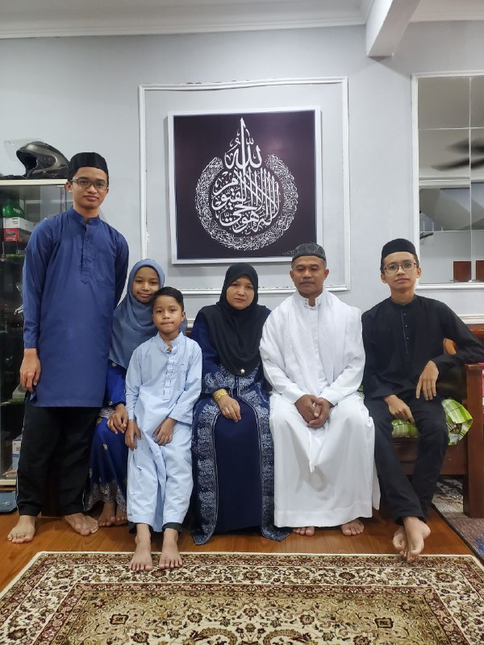

We have four total siblings in this family and the oldest is my brother which is only a year apart from myself. The third is turning 17 this year and going to take her SPM by the end of this year. The youngest is still in primary school. The picture was taken right before I entered my first semester in UiTM.
Both of my parents are from Kelantan and so does me and my brother but both of us grew up entirely in Kajang, Selangor. Earlier in life, my mom and dad got married and move from Kelantan to Kuala Lumpur for a better life. My dad worked at Telekom Malaysia as an technician making around RM500 a month which is barely making by at that time. So my mom took initiative on her own to sell food and "kuih" on the roadside. Alhamdulillah, our condition improved from that thanks to this two amazing and hardworking person in my life, there's some rough patches of our life where my father was bedridden due to cancer and my mother have a tumour removed when I was 10 years old. That never discourage both of my parents to keep moving forwards and do their best to provide for us. I'm truly to have all of this privilege in my life and it really motivate me to achieve more in my life.